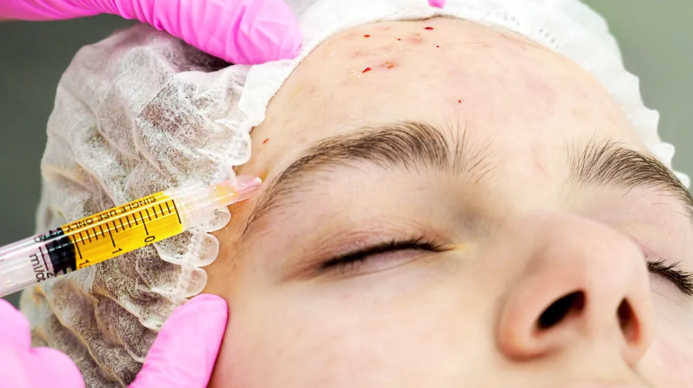

A mezoterápia során egyénileg összeállított hatóanyag-koktélokat – például hialuronsavat, vitaminokat és aminosavakat – juttatok a legvékonyabb tűkkel közvetlenül a bőr felső rétegeibe. Oda, ahová a krémek nem jutnak el.

Kinek ajánlott a kezelés?
Mindenkinek, aki tápanyagot és nedvességet szeretne közvetlen úton eljuttatni a bőrébe – kúraként vagy célzott felfrissítésként. Kíméletes belépő az esztétikai kezelések világába.
Mikor nem ajánlott a kezelés?
Aktív bőrfertőzés esetén, az összetevőkkel szembeni ismert allergiánál, valamint terhesség és szoptatás idején.
Hogyan zajlik a kezelés?
Minden kezelés részletes konzultációval kezdődik – elemzés, őszinte szakmai vélemény és felvilágosítás. Tisztítás és opcionális érzéstelenítő krém után a hatóanyag-koktélt nagyon vékony tűkkel, sok apró depóban juttatom a bőrbe. A kezelés felületes és jól tolerálható.
Lehetséges mellékhatások
Az apró bőrpír vagy csalánkiütésszerű duzzanat a szúrások helyén többnyire néhány órán belül eltűnik. Elvétve kisebb véraláfutás előfordulhat.
Alkalmazott készítmények
Steril, mezoterápiára engedélyezett hatóanyag-készítmények, a bőr állapotához igazítva összeállítva.
Árak
Az árak a törvényes közterheket tartalmazzák, és tájékoztató jellegűek. A végleges árat az orvosi konzultáción (70 €) kapja meg.
Konzultációs időpont foglalásaKötelezettség nélkül, őszinte szakmai véleménnyel.
Konzultációs időpont foglalásaA kezelés helye
A kezelés a grazi rendelőmben történik: Andritzer Reichsstraße 44, 8045 Graz. Időpont előzetes egyeztetés alapján.
Az Ön orvosa
Dr. Kovács Anna háziorvos, aki esztétikai kezelésekre specializálódott. Folyamatosan képzi magát itthon és külföldön, és világszerte egyike annak a három orvosnak, aki elnyerte az American Academy of Aesthetic Medicine 25 éves jubileumi ösztöndíját.
Ez is érdekelheti
Gyakori kérdések
Mi a különbség a skinboosterhez képest?
A mezoterápia felületesebben dolgozik hatóanyag-koktélokkal, a skinboosterek a térhálósított hialuronsavat mélyebbre viszik nedvességraktárként. A kettő gyakran kiegészíti egymást.
Hány kezelésre van szükség?
Kúraként általában 3–4 alkalom indokolt, 2–4 hét különbséggel, utána szükség szerinti fenntartó kezelésekkel.
Fájdalmas a kezelés?
A tűk nagyon vékonyak, és csak felületesen hatolnak be. Érzéstelenítő krémmel a kezelés jól tolerálható.
Hány éves kortól ajánlott?
Nincs „megfelelő életkor” – a bőr állapota a döntő. A célzott hidratálásból a fiatalabb bőr is profitál, például szárazság vagy stresszes életmód esetén.